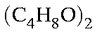

Next: Diamond Up: Examples Previous: Highly excited methane


Next: Diamond Up: Examples Previous: Highly excited methane
The data set shown in Figure 1 illustrates the data file for a polytetrahydrofuran calculation. As you can see the layout of the data is almost the same as that for a molecule, the main difference being the presence of the translation vector atom "Tv". This data set would allow calculation of all polymer properties except band structure and density of states. The reason why these properties could not be calculated is that the polymer units are not correctly specified. In order for the band-structure to be calculated, the order in which each atom in every mer occurs must be exactly the same. An example of such a numbering system is given for polyethylene, Figure 2.
Figure 1:
Example of a One-Dimensional PolymerPolytetrahydrofuran has a repeat unit of : i.e., twice the monomer unit. This is necessary in order to allow the lattice to repeat after a translation through 12.3 Å. See Solid State Capability for further details.
Note the two dummy atoms on lines 4k and 4l. These are useful, but not essential, for defining the geometry. The atoms on lines 4y to 4B use these dummy atoms, as does the translation vector on line 4C. The translation vector has only the length marked for optimization.
Figure 2:
Example of the use of MERS


Next: Diamond Up: Examples Previous: Highly excited methane